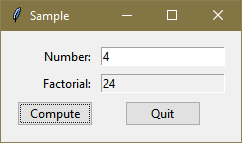

pcc.gui Package Tutorial¶
The pcc.gui Package API enables you to build a graphical user interface app with Python. The code excerpts in this tutorial are from the Sample App.
Create a pcc.gui.Window¶
To create a window, call newWindow().
You should declare the the variable that holds the window global,
so that other functions can use it:
global wn
wn = pcc.gui.window.newWindow('Sample', myKeypressFn, myUpdateFn)
Window Functions¶
You can provide two functions when you call newWindow(), keypressFn and updateFn.
You can supply one, both, or none of them, as you choose:
def myKeypressFn(key):
# This gets called whenever your window is the current window and the user
# hits a key on the keyboard. The key argument will be a string like:
# 'Escape', 'Return', 'a', 'b', etc.
...
def myUpdateFn():
# The system will call this function whenever it needs to update the state of the
# user interface (e.g. a button should be grayed out and inactive when the data it
# needs is not present). You can also call this function directly if you need to.
...
See the Sample App for an example of this.
If you are only supplying updateFn, use keyword argument syntax like this:
wn = pcc.gui.window.newWindow('Sample', updateFn=myUpdateFn)
Add Window Items¶
Add text fields and buttons to your window with addTextField() and addButton().
Note the use of sameRow to add the Quit button to the same row as the Compute button:
wn.addTextField('Number')
wn.addTextField('Factorial')
wn.setEnabled('Factorial', False)
wn.addButton('Compute', computeBtnClick)
wn.addButton('Quit', quitBtnClick, sameRow=True)
Button Click Functions¶
The second argument to addButton() should be the name of a function defined like this:
def fn(name):
...
When the button is clicked, this function will be called to perform the actions defined for that button.
The argument will be the name of the button that was clicked. This allows you to define one function to handle multiple buttons and distinguish which button was clicked via the name. Or you can have a separate function for each button.
Window Size and Position¶
You can set the window’s size and its position on the screen with
setPosn() and setSize().
If you do not do these, your window will be the right size to contain all of its items,
and the system will choose where to place the window on the screen:
wn.setPosn(200, 200)
wn.setSize(260, 90)
Opening and Closing¶
Once you have added all the items to your window and optionally sized and positioned it,
you can open the window by calling open():
wn.open()
To close your window, call close():
wn.close()
User Interface Item Focus and the Return/Enter Key¶
One of the user interface items in the window will typically have what’s called the “focus.” A text field, for instance, will have a blinking vertical cursor in it when it has the focus. A button with the focus will have some sort of hiliting. Keypresses will be directed to the item that has the focus.
If a button has the focus, pressing the Enter/Return key should have the same effect as mouse-clicking the button.
This behavior requires support from pcc.gui via focusReturnKey(), which needs to be called
from the app’s keypressFn:
def keyPress(key):
if key == 'Return':
wn.focusReturnKey()
Sample App¶
This is what the sample app window looks like. Note that the Compute button currently has the user interface focus, indicated by the hiliting.
Here is the code for the sample app.
import pcc.gui
def factorial(n):
if n <= 1:
return 1
else:
return n * factorial(n - 1)
def update():
n = wn.getValue('Number')
wn.setEnabled('Compute', n.isnumeric())
def keypress(key):
if key == 'Escape':
wn.close()
elif key == 'Return':
wn.focusReturnKey()
def computeBtnClick(name):
n = int(wn.getValue('Number'))
wn.setValue('Factorial', str(factorial(n)))
def quitBtnClick(name):
wn.close()
def run():
global wn
wn = pcc.gui.window.newWindow('Sample', keypress, update)
wn.addTextField('Number')
wn.addTextField('Factorial', enabled=False)
wn.addButton('Compute', computeBtnClick)
wn.addButton('Quit', quitBtnClick, sameRow=True)
wn.setPosn(200, 200)
update()
wn.open()
if __name__ == '__main__':
run()